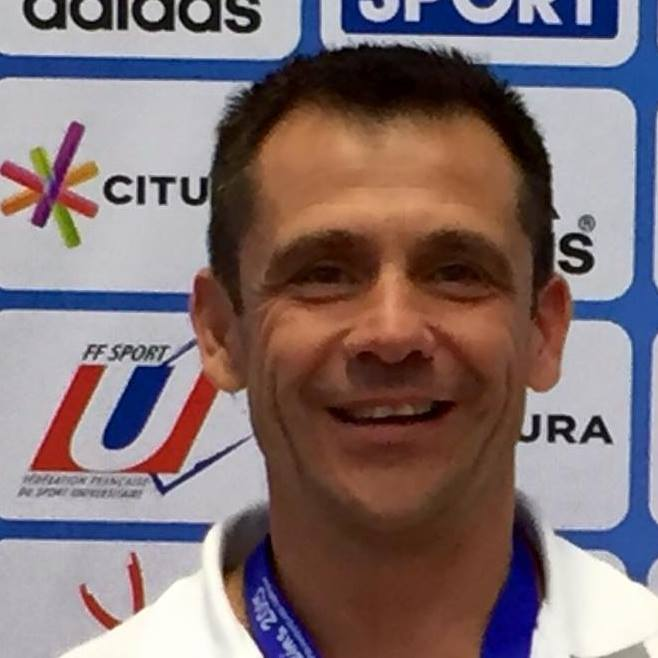

| Professeur de sport à INSA LYON |  |
|---|
Je vous propose un accompagnement personnalisé ou en groupe vers la recherche de l'excellence et de l'autonomie. Il n'est pas nécessaire d'ête sportif pour faire appel à moi. En effet, tout ce que nous verrons ensemble peut et va s'appliquer à votre vie de tous les jours, dans votre milieu professionnel.
Email : preparateurmental@yahoo.com
CENTRE DES SPORTS
INSA Lyon
Bâtiment Piscine Universitaire
7 rue des sports
69621 Villeurbanne Cedex France